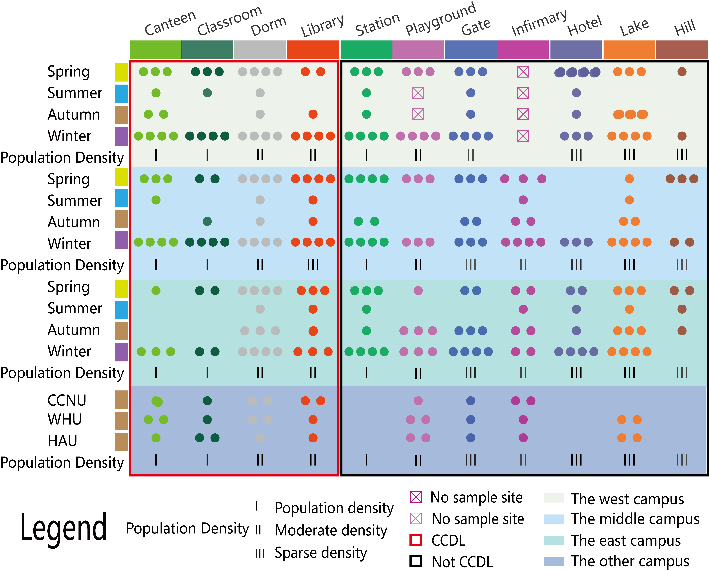

Sample processes and sampling sites
For investigating the bacterial community feature differences among variable seasons and sampling sites within campus, samples were collected from December 20th 2015 to ** 2017 in HUST(Huazhong University of Science and Technology) campus across six seasons. Sample collections were implemented every other day for three times seasonally during consecutive sunny days to eliminate unexpected deviation. To ensure sufficient replicates and plenty of bacterial quantity acquired from the habitat areas, 5 sterile swabs pre-moistened with 0.15M saline solution was applied to scratch against the surface of each sampling site about 3x10-9 km2in similarly serpentine way. Then 5 swabs from the same sites were put together into a sterile tube and stored under -80 oC for subsequent treatment.
For each site, 3 samples are to be collected at the different time. And for each site a specific time, a mixture including samples collected at 5 points for the same location are to be generated to represent the sample for that specific time and site.
Since there are two infirmaries only, we cannot plan three sites to gather nine infirmary samples in every season, and we plan to sample the infirmary in the middle HUST campus (FigureXXX D1) as well as the east campusonly(Figure6 D2). Scrubbing all the trail of the human beings, microbes, and other organisms, an unprecedented heavy rain lasted for a week in the summer of 2016 had stooped us from sampling, and we collected one replicate of samples before the heavy rain only. But the summer, three replicates were sampled in every season every other day for each site. Besides, the playground of the west campus has been under repairing throughout the fall (FigureXXX H1).In totally,10 samples were sampled from Wuhan University(WHU), Central China Normal University(CCNU) and Huazhong Agricultural University (HZAU) with the same method we used in HUST, in the Autumn of 2016, on 23 September. All the three campus, WHU, CCNU and HAU are in Wuhan city, and in different distance between each other as well as the HUST campus. Except the CCNU campus, there are at least one lake in the campus that we did sampled. One of the school campus which was littler closer to the CCNU campus, with a six-lane street to separate each other.
DNA extraction and 16S rRNA sequencing
To obtain high-molecular-weight metagenomic DNA,a modified CTAB method was chosen[26-28]. Afterthe front end of the swabs were cut into small strips into small strips to 50ml centrifuge tube with sterilized surgical scissors, we add 5 ml lysis buffer (Cetyl Trimethyl Ammonium Bromide, 1% w/v; EDTA, 100mM; NaCl, 1.5mol l -1; Sodium phosphate, 100mmol l -1; Tris-Cl pH 8.0, 100mmol l -1 ). 20 µl Proteinase K was added to the reaction mixture followed by gentle shaking at 100rev min -1. SDS was added to a final concentration of 1% and the reaction was incubated at 65°C for 30min with intermittent shaking. After above steps, an equal volume of saturated Phenol, chloroform and isoamyl alcohol (25: 24:1) was added to the mixture and centrifuge at 12000 rev min -1 (12114g) for 10min to collect supernatant that free from protein, repeat again. Metagenomic DNA was precipitated with 0.6 volumes of isopropanol for 30min at -20 °C and pelleted by centrifugation at 12,000rev min -1 (12114g) for 10min. DNA was washed twice with 70% ethanol and finally dissolved into a 200µl of TE (1X), pH 8.0.
Before sequencing with Illumina Miseq PE300, DNA samples were quantified using a Qubit® 2.0 Fluorometer (Invitrogen, Carlsbad, CA) and its’ quality was checked on a 0.8% agarose gel. To amplify the V4-V5 variable region of 16S rRNA genes for each individual sample with "5`-GTGYCAGCMGCCGCGGTAA-3`" as the forward primer and "5-CTTGTGCGGKCCCCCGYCAATTC-3`" the reverse[8], 5-50 ng metagenomic DNA in high quality was used as the template.DNA library for sequencing was constructed using a MetaVxTM Library Preparation kit (GENEWIZ, Inc., South Plainfield, and NJ.USA). And then, indexed adapters were added to the ends of 16S rDNA amplicons by limited-cycle PCR. Verified by Agilent 2100 Bioanalyzier(Agilent Technologies, Palo Alto, CA, USA), and quantified by Qubit® 2.0 Fluorometer (Invitrogen, Carlsbad, CA) and real-time PCR(Applied Biosystems, Carlsbad, CA, USA) , the DNA libraries were normalized for sequencing. Using paired-end sequencing technology (2*300 bp), the followed sequencing reactions were performed on the Illumina MiSeq platform.
Quality Control, OTU clustering, and taxonomy assignment
Processed according to the following criteria, and sequences of 16S rRNA gene below the set quality were removed and be absent from the subsequent analyses. At the beginning, ‘make.contigs’ command in the mothur (version 1.38.1)[29] was chosen for splicing the paired-end reads with default settings. After that, all reads that longer than 500bp and shorter than 300, or containing ambiguous base calls(N), were removed. The SILVA database[30] was acted as reference when identifying putative chimeras using ‘chimrea.uchime’ command in mothur, before the putative chimeras was removed with ‘remove.seqs’ command in the mothur. After that, high-quality sequences were aligned using PyNAST[31] and dereplicated using UCLUST in QIIME(Quantitative Insights Into Microbial Ecology, Bould, CO, USA, V1.9.1)[32]. Then, the Greengenes database[33] (version 13_8)was used as the refrence database for operational taxonomic unit(OTU) classification(97% nucleotide identity, pick de novo OTUs). To remove singletons OTUs, the minimum reads per OTU threshold was set at 0.001%
The functionality of the different metagenomeswas predicted using the software PICRUSt 1.1.0, which allows the prediction of functional pathways from the 16S rRNA reads. First, a collection of closed-reference OTUs was obtained by using QIIMEpick_closed_reference_otus.py script in default settings. The output table was normalized based on the predicted 16S rRNA copy number by using the script normalize_by_copy_number.py. Final functional predictions, inferred from the metagenomes, were created with the script predict_metagenomes.py. When necessary, tab-delimited tables were obtained with the script convert_biom.py
Microbial diversity assessment
Bacterial alpha- and beta-diversity values were determined using the QIIME[32] pipeline. For alpha-diversity, rarefaction curves were draw based on the richness metric: “observe OTU”, and evenness metric: Shannon[34] evenness metric. Core-OTUs were defined as a set of OTUs that were identified in all samples analyzed. For the beta-diversity analysis, Euclidean distance, weighted and unweighted UniFrac distance metrics[35] were used to measure community similarity between samples. Bacterial community clustering was arrayed by Principle Coordinate Analysis(PCoA) and visualize dusing Emperor[36] in QIIME. The hierarchical clustering method, was applied to cluster all samples Pheatmap was used to visualize Spearman Correlation between different samples. To fully analyse there lationship between different factors and microbiome community, Mantel test was used to calculate and Circos was used to visualize.
Biomarker analysis
Linear discriminate analysis(LDA) effect size (LEfSe)[37] was used to find out the biomarkers that can act as microbial signature of the divided group in this research. Specifically, tables with the group information and the taxa abundance in different taxonomic levels was imported into the LEfSe pipeline and the parameters was set as follows: the alpha value for the factorial Kruskal-Wallis test between classes and the p-value for the pairwise Wilcoxon test between subclass were both 0.05. For discriminating the features, the threshold for the logarithmic LDA score was 2.0fordefault.
Co-occurrence Network Analysis
To reduce false-positives caused by excessivemutualexclusions, OTUs that exist in all samples, with the average relative abundances intop150were selected. Based on the relative abundance of these OTUs, Spearman Correlation similarity matrix were used and calculated as described in the literature[3,7,22,38]. The cutoff of SpearmanCorrelation Coefficient value was set at 0.6 and the filtered co-occurrence matrix was visualized by Cytoscape[39](version 3.5.1). ClusterVizapp[40] with EAGLEalgorithmindefaultparameterwas used to identify the cluster(module) in the network. Network nodes and edges represent OTUs and mutual exclusion relationship between OTUs, respectively. Spearman Correlation Coefficient(SCC) values were determined to measure the strengthen of relationships among the OTUs as described in the literature[7, 41].